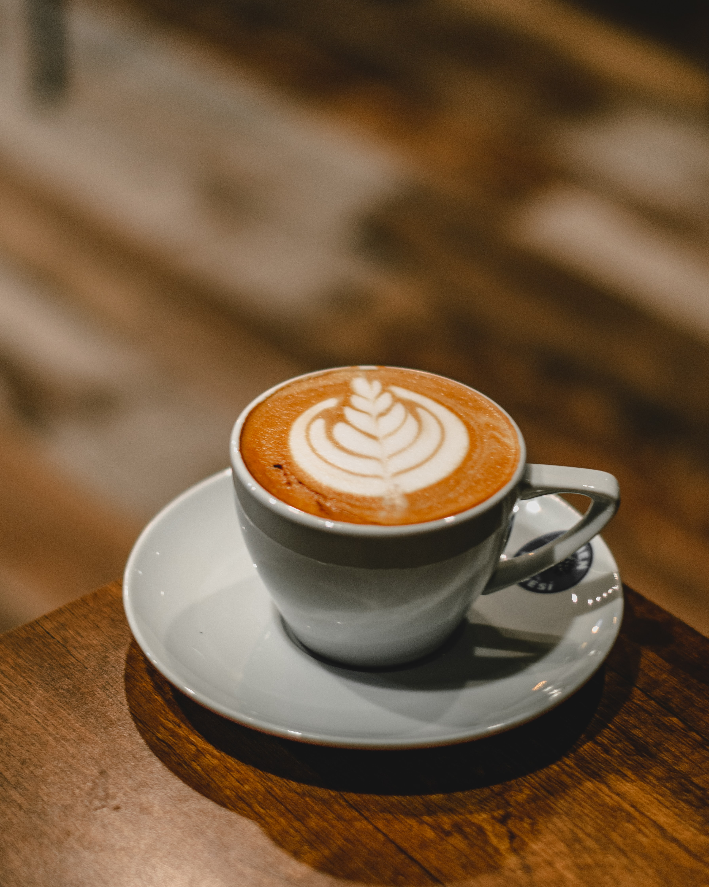
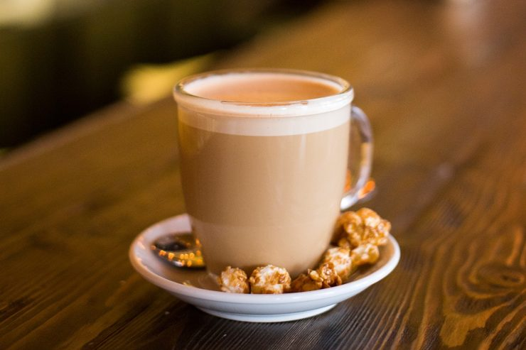

SINCE
2022

SINCE
2022
Ristretto
Ristretto este un tip de cafea espresso la jumătatea cantitativă (20ml) a unui espresso normal (40ml). Un ristretto este o ceașcă mică și puternică de cafea de 15 până la 20 ml. Cuvântul ristretto înseamnă limitat în italiană.
29 lei

Americano
Cafeaua Americano este o băutură de cafea neespresso, făcută prin diluarea unui shot de espresso cu apă fierbinte într-un raport 1:1 sau 1:2.Are un gust mai slab decât espresso-ul și o consistență mai asemănătoare cu cafeaua filtrată.
29 lei

LAtte
Cafeaua latte este o băutură de cafea cu lapte, făcută prin adăugarea unui shot de espresso într-un pahar cu lapte cald și spumă de lapte deasupra. Este o băutură cremoasă, cu un gust echilibrat între cafea și lapte.
45 lei
Ciocolata
Fierbinte
Cafeaua ciocolată fierbinte este o băutură caldă din ciocolată topită în lapte sau apă, amestecată cu zahăr și, uneori, cu vanilie sau scorțișoară. Este o băutură dulce și cremoasă, perfectă pentru a fi savurată într-o seară rece de iarnă.
37 lei
Matcha
Latte
Cafeaua matcha latte este o băutură de cafea verde făcută din praf de ceai matcha amestecat cu lapte cald sau aburit. Este o băutură vibrantă, cu un gust dulce-amărui și o aromă proaspătă de ceai verde, foarte populară în cultura japoneză.
69 lei

Cookie
RAF
Cafeaua Cookie Raf este o băutură de cafea indulgentă făcută prin amestecarea unui shot de espresso cu lapte și siropuri de caramel, vanilie și biscuiți Oreo, garnisită cu frișcă și bucăți de biscuiți Oreo.
65 lei
Cold
Brew
Cafeaua Cold Brew este o băutură de cafea făcută prin infuzarea cafelei măcinate cu apă rece, timp de câteva ore sau chiar peste noapte, fără a fi nevoie de încălzire. Este o băutură răcoritoare, cu un gust puternic de cafea.
35 lei
Iced
Latte
Cafeaua Iced Latte este o băutură de cafea rece făcută prin combinarea unui shot de espresso cu lapte rece, gheață și, uneori, siropuri sau arome. Este o băutură răcoritoare, cremoasă și ușor dulceagă.
58 lei

Curg amintiri din ceasca sufletului tau